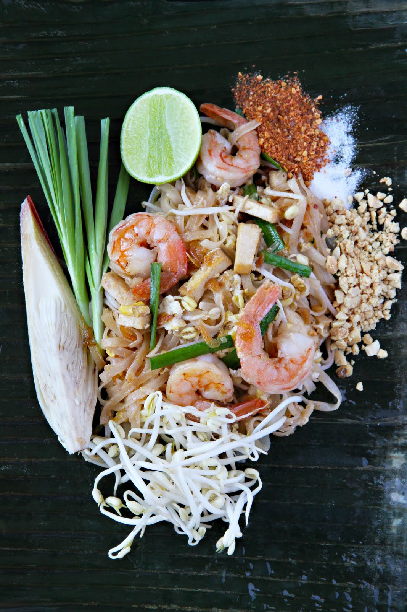

Pad Thai

Description
Pad Thai is one of Thailand's national dishes, it is considered a national staple. A national dish should be a representation of the country's identity and
uniqueness. The dish is a combination of a sweet-savory fusion. Salty, nutty and of course spice which goes without saying for Thais. Some of the few ingredients
that are found in this culmination of sweet-savory delight comprises of: rice noodles; eggs; vegetables like spring onion and beansprouts; red chilli pepper;
tamarind paste; garlic; tofu; dried shrimp; and a meat of your choice (usually shrimp!)
Ingredients:
- Rice noodles
- Soy sauce
- Eggs
- Spring onion
- Beansprouts
- Red chilli pepper
- Tamarind paste
- Sriracha sauce
- Sugar
- Garlic
- Meat of your choice - Shrimp, Chicken usually works best
- Tofu
- Peanuts
- Dried shrimp (optional)
Steps:
- Cook noodles just until tender. Rinse under cold water.
- Stir together soy sauce, brown sugar, tamarind paste, and Sriracha. Set aside.
- Heat 1½ tablespoons of oil in a large saucepan over medium-high heat. Add the shrimp, chicken or tofu, garlic and bell pepper. Cook until meat is done.
- Push everything to the side of the pan. Add a little more oil and add the beaten eggs. Scramble the eggs, breaking them into small pieces with a spatula as they cook.
- Add noodles, sauce, bean sprouts and peanuts to the pan (reserving some peanuts for topping at the end). Toss everything to combine.
- Top with green onions, extra peanuts, cilantro and lime wedges. Serve immediately!
- Bon Appétit!
Return to Main Page